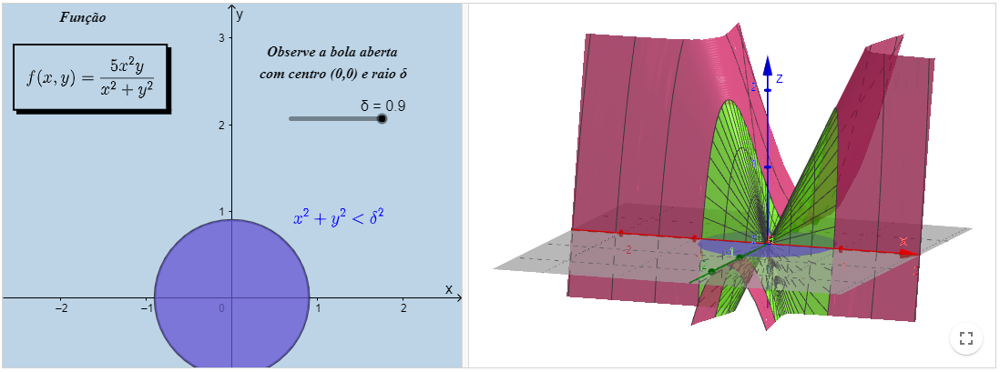

Funções escalares de várias variáveis
Limite e continuidade de funções escalares de várias variáveis
Para definirmos o conceito de limite de funções escalares de várias variáveis é necessário compreendermos previamente alguns objetos.
A seguir apresentamos esses objetos e suas definições.
Definição
Uma bola aberta em \(\mathbb{R}^{n}\) de raio r com centro em \(X_{0}=\left(x_{1}, x_{2}, \ldots, x_{n}\right)\), que denotaremos por \(B_{r}\left(X_{0}\right)\), é definida por\( B_{r}\left(X_{0}\right)=\left\{\left(x_{1}, x_{2}, \ldots, x_{n}\right) \in \mathbb{R}^{n} \mid\left(x_{1}-x_{10}\right)^{2}+\left(x_{2}-x_{20}\right)^{2}+\ldots+\left(x_{n}-x_{n_{1} 0}\right)^{2} < r^{2}\right\} \)
Definição:
Dado um conjunto \(A \subseteq \mathbb{R}^{n}\), não-vazio, dizemos que \(X_{0} \in A\) é um ponto interior de \(A\) se existe uma bola aberta com centro em \(X_{0}\) inteiramente contida em \(A\).
Definição:
Dado um conjunto \(A \subseteq \mathbb{R}^{n}\), não-vazio, dizemos que \(A\) é um conjunto aberto se todos os seus pontos são interiores.
Definição:
Uma vizinhança de um ponto \(X_{0} \in \mathbb{R}^{n}\) é um conjunto aberto que contém \(X_{0}\).
Definição:
Dizemos que \(X_{0} \in \mathbb{R}^{n}\) é um ponto de acumulação de um conjunto \(A \subseteq \mathbb{R}^{n}\) se toda bola aberta com centro em \(X_{0}\) contém pelo menos um ponto \(X \in A, X \neq X_{0}\).Com esses conceitos estabelecidos, apresentamos então a definição de limite de funções escalares de várias variáveis.
Definição:
Seja \(f\) a função escalar de várias variáveis...
Definição:
Dado um conjuCurvas de nível II
Curvas de nível III

Curvas de nível IV

Superfície de Nível

O conteúdo apresentado foi gerado através das notas da professora Denise de Oliveira Pinto, do Departamento de Matemática Aplicada da Universidade Federal Fluminense.
Co-autores: Author:Begoña Alarcón, Guilherme Cardoso Garcia de Carvalho, Raphael Odalvo.